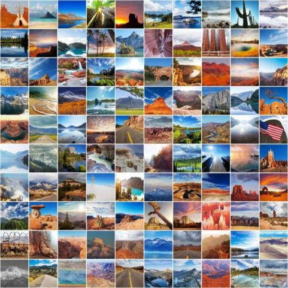

Tema 9Recursos de Imágenes Gratuitas
Existen miles de millones de imágenes en Internet, pero muchas de ellas no pueden ser utilizadas en nuestras páginas web porque estaríamos violando derechos de autor. Por ello, puede resultar difícil encontrar buenos recursos si no contamos con la capacidad de crear nuestras propias imágenes.
A continuación enlistamos algunos sitios web que nos pueden ayudar. Sus imágenes e íconos son de uso libre, lo cual significa que podemos utilizarlas en nuestras páginas web.
La legislación alrededor de este tipo de imágenes aún no está completamente definida, y es importante mantenerte informado sobre la evolución de las leyes de derechos de autor alrededor de estas herramientas si necesitas utilizarlas. En general, la mejor opción para evitar problemas legales es utilizar tus propios gráficos e imágenes para tus páginas web.